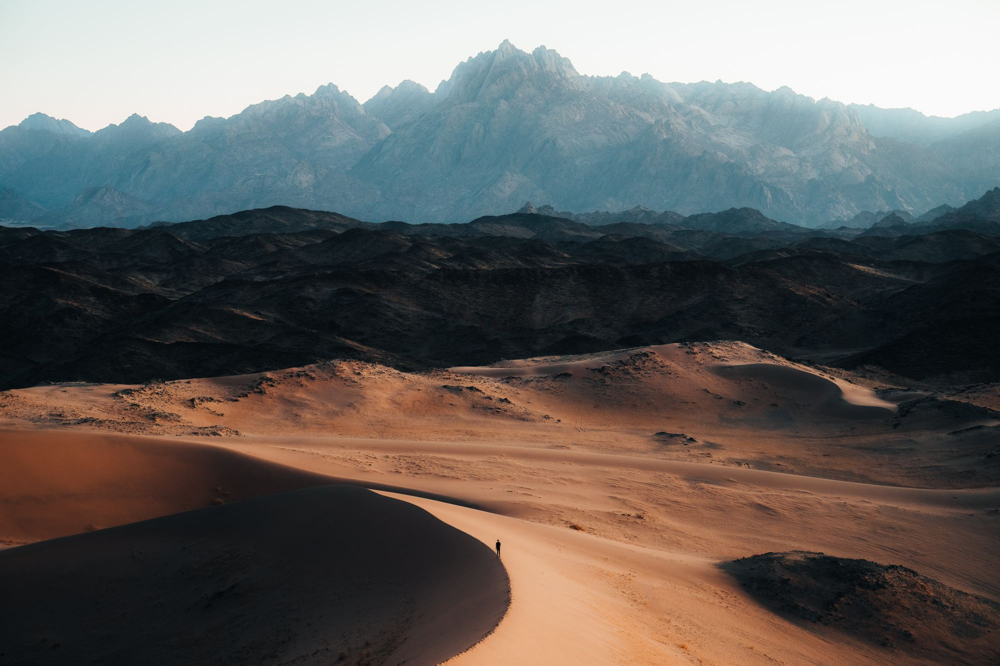
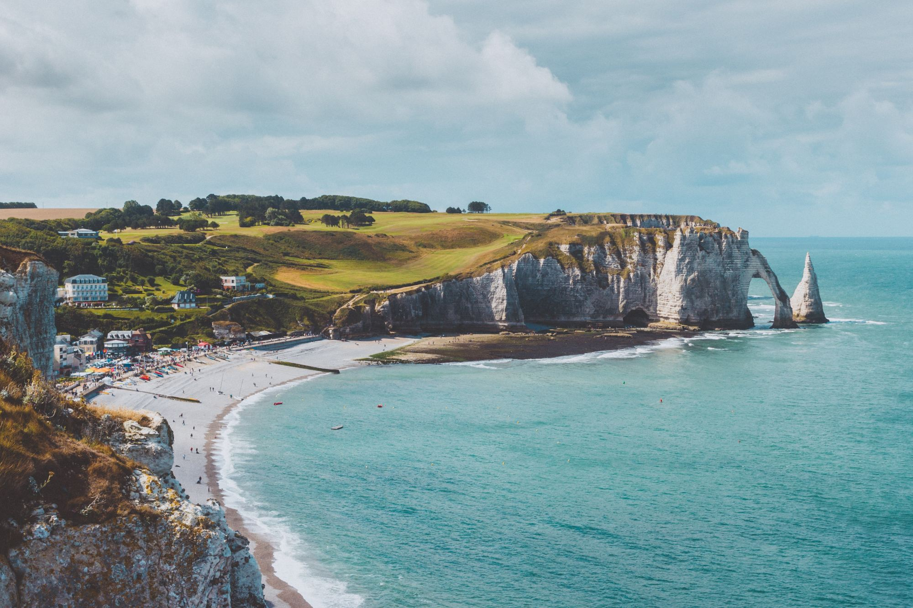

NatureLes Sables d’Olonne
La beauté d’une ville balnéaire de la côte atlantique, entre forêt domaniale, dunes et plages.
Lire l’article
The Wild Tour
Les bonnes adresses et les plus beaux endroits de nos régions, racontés par les Wilders.
Soyez les bienvenus sur « The Wild Tour ». Ce blog réunit les bonnes adresses et les meilleurs endroits que chaque Wilder a dénichés dans sa région ou son département. Feuilletez les articles et, si l’un d’eux vous plaît, on vous conseille vivement d’aller y faire un tour !
À la une

NatureLa beauté d’une ville balnéaire de la côte atlantique, entre forêt domaniale, dunes et plages.
Lire l’article Gastronomie
Gastronomie
Le premier restaurant japonais de Chartres : sushis, makis et salle traditionnelle où l’on mange assis sur des coussins.
Lire l’article Écologie
Écologie
Un tour d’horizon libournais des acteurs qui réparent, recyclent et revalorisent au quotidien.
Lire l’articleSélection

Sport · Aube
Un article sur la pêche dans l’Aube et ses environs : sensibilisation à l’environnement, pêche « no kill » et journées dépollution des plans d’eau.
Lire l’article
Art · Bordeaux
Cet article vous fera voyager dans la région bordelaise avec ses secrets, ses histoires ainsi que son art et son architecture.
Lire l’article